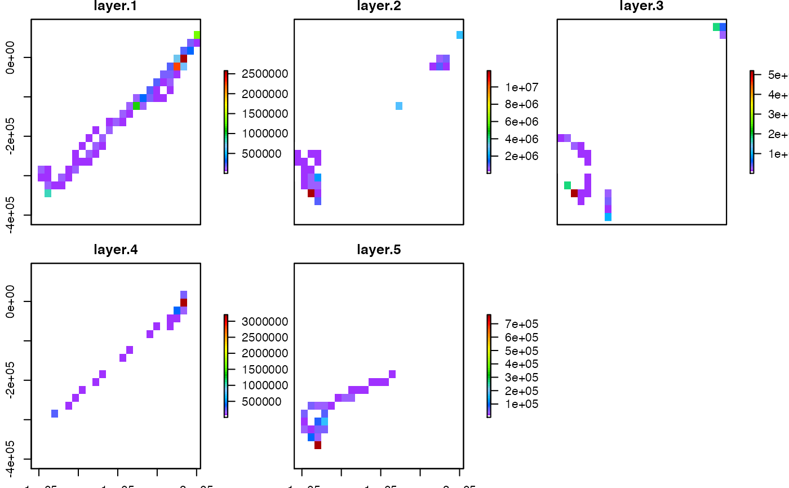

Split trip events within a single object into exact time boundaries, adding interpolated coordinates as required.
# S3 method for trip cut(x, breaks, ...)
| x | A trip object. |
|---|---|
| breaks | A character string such as the |
| ... | Unused arguments. |
A list of trip objects, named by the time boundary in which they lie.
Motion between boundaries is assumed linear and extra coordinates are added at the cut points.
This function was completely rewritten in version 1.1-20.
See also tripGrid.
Michael D. Sumner and Sebastian Luque
if (FALSE) { set.seed(66) d <- data.frame(x=1:100, y=rnorm(100, 1, 10), tms= as.POSIXct(as.character(Sys.time()), tz = "GMT") + c(seq(10, 1000, length=50), seq(100, 1500, length=50)), id=gl(2, 50)) sp::coordinates(d) <- ~x+y tr <- trip(d, c("tms", "id")) cut(tr, "200 sec") bound.dates <- seq(min(tr$tms) - 1, max(tr$tms) + 1, length=5) trip.list <- cut(tr, bound.dates) bb <- bbox(tr) cn <- c(20, 8) g <- sp::GridTopology(bb[, 1], apply(bb, 1, diff) / (cn - 1), cn) tg <- tripGrid(tr, grid=g) tg <- sp::as.image.SpatialGridDataFrame(tg) tg$x <- tg$x - diff(tg$x[1:2]) / 2 tg$y <- tg$y - diff(tg$y[1:2]) / 2 op <- par(mfcol=c(4, 1)) for (i in 1:length(trip.list)) { plot(sp::coordinates(tr), pch=16, cex=0.7) title(names(trip.list)[i], cex.main=0.9) lines(trip.list[[i]]) abline(h=tg$y, v=tg$x, col="grey") image(tripGrid(trip.list[[i]], grid=g), interpolate=FALSE, col=c("white", grey(seq(0.2, 0.7, length=256))),add=TRUE) abline(h=tg$y, v=tg$x, col="grey") lines(trip.list[[i]]) points(trip.list[[i]], pch=16, cex=0.7) } par(op) print("you may need to resize the window to see the grid data") cn <- c(200, 80) g <- sp::GridTopology(bb[, 1], apply(bb, 1, diff) / (cn - 1), cn) tg <- tripGrid(tr, grid=g) tg <- sp::as.image.SpatialGridDataFrame(tg) tg$x <- tg$x - diff(tg$x[1:2]) / 2 tg$y <- tg$y - diff(tg$y[1:2]) / 2 op <- par(mfcol=c(4, 1)) for (i in 1:length(trip.list)) { plot(sp::coordinates(tr), pch=16, cex=0.7) title(names(trip.list)[i], cex.main=0.9) image(tripGrid(trip.list[[i]], grid=g, method="density", sigma=1), interpolate=FALSE, col=c("white", grey(seq(0.2, 0.7, length=256))), add=TRUE) lines(trip.list[[i]]) points(trip.list[[i]], pch=16, cex=0.7) } par(op) print("you may need to resize the window to see the grid data") } data("walrus818", package = "trip") library(lubridate)#> #>#> #> #>walrus_list <- cut(walrus818, seq(floor_date(min(walrus818$DataDT), "month"), ceiling_date(max(walrus818$DataDT), "month"), by = "1 month")) g <- rasterize(walrus818) * NA_real_ stk <- raster::stack(lapply(walrus_list, rasterize, grid = g)) st <- raster::aggregate(stk, fact = 4, fun = sum, na.rm = TRUE) st[!st > 0] <- NA_real_ plot(st, col = oc.colors(52))